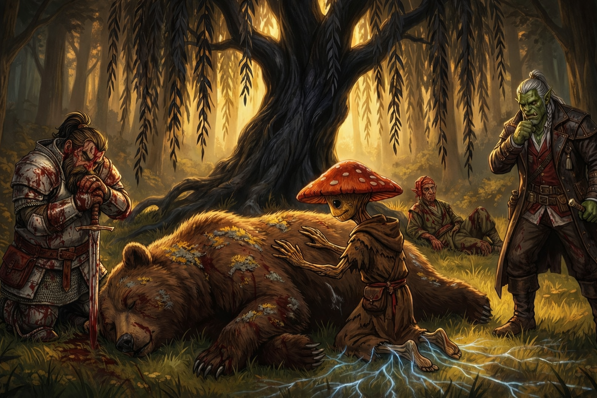

Session Three: Mystery at the Mourndusk Willow¶
Date: February 12, 2026
Overview¶
The party ventured into the Dark Woods to investigate the Mourndusk Willow—the ancient tree Magistrate Kurosawa has been secretly visiting. They discovered evidence of a dark summoning ritual at the tree's base, fought blight-infected wildlife, and created a salve to cleanse the arcane corruption. Back in Willowshore, Migo identified the ritual as an ancient demonic summoning of a pestilence entity called the Mother of a Thousand Wings, and revealed that Willowshore sits at a convergence of ley lines—explaining the magistrate's true interest in this forgotten village.
Key Events¶
Into the Dark Woods¶
The party (minus Littlefinger, who stayed behind in Willowshore to keep watch) headed north past the graveyard into the Dark Woods. The forest felt wrong—colder, heavier, with an unnatural presence that hadn't been there before. Donkey, who has walked these woods for years, confirmed that something had changed. Ginkgo felt it through his bare feet—a darker, colder presence in the earth itself.
Identifying the Spirit: Cassian Voss¶
On the way, the party discussed the translucent spirit they'd encountered at the graveyard. Donkey's Willowshore Lore (26) identified the figure: Cassian Voss, a religious researcher from Absalom—a foreign continent. Voss had arrived in Willowshore a couple of months before the magistrate, stayed roughly a week, and appeared to move on. His specialty was "old gods"—elder deities that predated the current known pantheon, similar to how Greek mythology's Titans preceded the Olympians. He was particularly interested in Tian Xia's gods and any connections to these ancient entities.
The Mourndusk Willow Clearing¶
The party reached a sunlit clearing in the dense forest where the Mourndusk Willow stood—a weeping willow with midnight-black bark, black leaves, and extensive roots that arced up through the grass like veins or fingers spreading across the clearing.
Two things were immediately alarming:
- A yellow lichen blight had erupted across the east side of the tree, spreading outward like a shotgun blast pattern
- A smooth depression between two roots at the tree's base, about two feet deep, containing ritual objects
Investigating the Blight¶
Ginkgo examined the lichen (Nature 25) and determined it was not natural—it was an arcane blight, a "bruise" or rash caused as an after-effect of some energetic event. The blast pattern pointed to the depression on the east side as the source. The lichen was alive and would continue to spread, but the cause was a flash of energy rather than an ongoing infection.
When Ginkgo asked the tree how it felt (Nature check with Guidance), the answer was clear: the tree was sad and battered.
The Ritual Pit¶
At the base of the tree, between two arcing roots, the party found a smooth, oblong depression containing:
- A ceremonial steel dagger — Curved blade, ornate leather-wrapped handle, stuck into the earth. Etchings on the blade in Toanin, an infernal language common among oni, reading: "Let ancient law be sealed in the hand that guides Willowshore"
- A clay bowl — Unglazed, non-descript earthenware containing crushed moth wings (bodies removed, only wings remained)
- Blood stains — Minor flecks in the bowl and on the knife
Da Baishan's investigation (Occultism 24) pieced it together: this was a dark sacrificial substitution ritual—a communion or summoning process that used the Mourndusk Willow as a conduit. The ritual appeared to have been at least partially or fully successful, with the lichen blight as its byproduct. The items could be safely removed.
Combat: The Blighted Beasts¶
While examining the ritual site, infected wildlife attacked: a blight-infected bear and two infected squirrels, all sporting the same yellow lichen and glowing yellow eyes.
The Salve¶
Ginkgo crafted a healing salve using his healer's toolkit and a piece of himself—literally tearing off part of his fungal body and mixing it into a paste. When applied to the tree, the lichen turned gray and flaked away. Da Baishan assisted with his alchemist toolkit, and together they produced a salve bomb for use at range.
The Fight¶
- Boone charged the bear and landed a solid longsword hit (7 damage), but the wound released a cloud of yellow spores (Boone passed his Fortitude save)
- Ginkgo cast Fear on the bear (frightened 2, -2 to all checks, saves, and AC), then focused on healing Boone through the mycelium
- The bear mauled Boone mercilessly—a critical claw attack knocked him to 0 HP, then it turned on Donkey
- Donkey went down to 0 HP from a bear claw after already taking squirrel bites
- Da Baishan abandoned his crossbow (which missed every shot) and switched to his short sword, landing two hits while flanking
- Ginkgo cast Stabilize on Boone to stop his dying, then Heal to bring him back to consciousness (12 HP), then healed Donkey with Treat Wounds
- Boone rose and delivered the killing blow to the bear (10 damage)
- Da Baishan leapt over his allies to tackle and restrain a squirrel, then detonated the salve bomb at point-blank range
- The salve cured both squirrels—their eyes faded from yellow to normal, they calmed down, and scampered off into the woods, free of the corruption
Ginkgo's Farewell¶
After the fight, Ginkgo placed his hands on the fallen bear and spoke softly: "The soil welcomes you. By tomorrow the forest will know your name." He felt the bear's spirit pass peacefully into nature's cycle.
Cleansing the Tree¶
The party spent the remaining daylight methodically applying salve to every trace of yellow lichen on the tree, its roots, and the surrounding ground. By the time they finished (~5:30 PM), the blight was fully removed—the lichens turned gray and flaked away wherever the salve was applied.
Yong's Gift: Runed Weapons¶
Returning to Willowshore, the party was met by Yong the blacksmith, who delivered their commissioned weapons—Da Baishan's guandao and Boone's ji-sarm—each bearing an etched striking rune as a gift of gratitude. Yong thanked them for everything they'd done for Willowshore and his family, and confirmed he plans to leave after the festival for a coastal town where Hong can see the ocean.
Evening Investigations¶
The party split up:
Ginkgo & Donkey Visit Migo¶
They brought the dagger, bowl, and their findings to Migo, who listened intently. Her analysis:
- The ritual is an old demonic summoning of an entity she called the "Mother of a Thousand Wings"—an ancient demon of pestilence
- The moth wings in the bowl and the lichen blight are consistent with this entity's domain
- The Mourndusk Willow serves as a "lightning rod" for the ritual—its deep, ancient roots reaching back into the earth's primordial history
- Willowshore sits at a convergence of ley lines—arcane geomancy paths deep in the earth, mirrored by the junction of five rivers on the surface. This makes it a focal point for amplifying magical power
- She believes Magistrate Kurosawa knows about the ley lines, is "well versed" in these arts, and that this is the true reason he was assigned to Willowshore
- She cannot undo or counter the ritual herself, but suggested two leads:
- Search the magistrate's quarters for books or notes about the ritual
- Explore the old mining towns in the southern mountains, where ancient knowledge might survive
- She revealed two secret entrances into the Yeshou estate (now occupied by the magistrate):
- A passageway from the stables leading to the wine cellar
- An entrance through the base of the koi pond
Da Baishan & Boone Visit Hong¶
They checked in with Hong at Yong's forge. Hong reported that none of his friends were hired for sabotage—they're all just excited about the festival. Da Baishan leaned in close with an orcish growl: "And you're sure?" Hong, wide-eyed and quivering, confirmed. The party was satisfied—for now.
Rest and Recovery¶
The party regrouped at Silver Mist Inn, shared their findings with Littlefinger, healed their wounds through the night with medicine checks and rest, and prepared for the next day—the day of the Festival of Returning Spirits.
Memorable Moments¶
- Ginkgo's salve creation — Tearing a piece of himself off to mix into a healing paste, Guardians of the Galaxy style. "How much do you need?" "You don't want to know how he gets it."
- Boone vs. the bear — Knocked unconscious, healed back, and delivering the killing blow in a grim display of dwarven tenacity
- Da Baishan's aerial squirrel tackle — Abandoning his crossbow in disgust, parkouring over his allies, and slamming into a diseased squirrel mid-leap. "There you go, Ginkgo. I got you one."
- "Please don't kill it" — Ginkgo begging Boone not to kill the bear while Boone is actively being mauled: "I know you don't want to hurt the bear, but maybe hurt the bear."
- The salve bomb cure — Both squirrels' eyes fading from sick yellow to normal as the corruption lifted, then scampering away peacefully
- Ginkgo's farewell to the bear — "The soil welcomes you. By tomorrow the forest will know your name." A quiet, genuine moment amid the carnage
- Da Baishan's crossbow woes — Every single bolt sailed into the woods. "I need a different weapon. This damn crossbow." He switched to short sword and immediately started hitting
- The party's retelling to Littlefinger — "Instead of telling Littlefinger it was a bear and two squirrels, just say it was three bears." "And every crossbow bolt struck true."
Discoveries¶
New NPCs¶
| NPC | Role |
|---|---|
| Cassian Voss | Researcher from Absalom; studied "old gods" / elder deities; the spirit the party has been seeing |
Items & Resources¶
| Item | Details |
|---|---|
| Ceremonial dagger | Steel, curved blade, Toanin inscription: "Let ancient law be sealed in the hand that guides Willowshore" |
| Clay bowl with moth wings | Unglazed earthenware; wings only (no bodies); part of the summoning ritual |
| Da Baishan's guandao | Polearm with striking rune (+1 hit/damage), crafted by Yong |
| Boone's ji-sarm | Polearm with striking rune (+1 hit/damage), crafted by Yong |
| Ginkgo's healing salve | Fungal paste that neutralizes the arcane lichen blight; made from Ginkgo's own body |
Lore Learned¶
- Cassian Voss was a religious researcher from Absalom who specialized in "old gods"—elder deities predating the current pantheon. He visited Willowshore a couple of months before the magistrate and appears to be the spirit the party encountered
- The Mourndusk Willow ritual was a dark sacrificial summoning—a communion with an entity called the "Mother of a Thousand Wings", an ancient demon of pestilence
- Toanin is an infernal language common among oni; the dagger inscription references "the hand that guides Willowshore"—the oni magistrate
- Ley lines (arcane geomancy paths) converge beneath Willowshore, mirrored by the five rivers meeting on the surface—making it a focal point for amplifying magical power
- The lichen blight is a byproduct of the ritual, not its purpose; Ginkgo's fungal salve can neutralize it
- Blighted animals can be cured with the salve—their corruption is reversible
- The Yeshou estate has two secret entrances: stables → wine cellar, and through the koi pond
- Striking runes are weapon enhancements common in Pathfinder 2e; Yong etched them as a gift
Open Threads¶
Active Mysteries¶
- The Mother of a Thousand Wings — An ancient pestilence demon has been summoned (or partially summoned) through the Mourndusk Willow. What exactly was achieved? Is the entity loose, bound, or somewhere in between?
- What is Kurosawa's role? — The dagger inscription in Toanin and Migo's analysis both point to the magistrate as the ritualist. But is he summoning the demon for the oni regime, or acting alone? And why?
- Cassian Voss — The spirit is identified as a foreign researcher of old gods. How did he die? Is his death connected to the ritual? His spirit said: "Something stolen, something broken"
- Will the blight return? — The party cleansed the Mourndusk Willow, but if the ritual's effects are ongoing, the corruption could spread again
- The ley lines — Willowshore's location at a convergence of arcane power lines explains its importance. Who else knows about this?
Commitments & Debts¶
- Festival of Returning Spirits — Tomorrow evening; the party must ensure it proceeds smoothly as the magistrate's deputies
- Mayor Masru's arrival — Expected during the festival; the party still doesn't know what to expect
- Infiltrate the Yeshou estate — Migo provided two secret entrances to search the magistrate's quarters for ritual research
- Ginkgo's appointment — Still scheduled to visit Radiant Willow at Dew Drop Petals for a makeover
- Monitor the Mourndusk Willow — Donkey suggested returning in a few days to check for new lichen growth
Next Steps¶
- The Festival — Attend and ensure security as the magistrate's deputies
- Infiltrate the magistrate's estate — Search for books, notes, or ritual materials via the stables or koi pond
- Research the Mother of a Thousand Wings — Find more information about this ancient pestilence demon
- Confront or surveil Kurosawa — The party now has strong evidence linking him to dark rituals
- Ginkgo's makeover — Visit Radiant Willow in the morning (potential gossip source)
- Prepare for Mayor Masru — His arrival may change everything
Timeline¶
| Time | Event |
|---|---|
| ~2:00 PM | Party enters the Dark Woods (Littlefinger stays behind) |
| ~2:30 PM | Party arrives at the Mourndusk Willow clearing |
| ~2:45 PM | Discovery of the ritual pit, dagger, bowl, and lichen blight |
| ~3:00 PM | Combat begins: blighted bear and two squirrels attack |
| ~3:30 PM | Combat ends; Boone kills the bear; salve bomb cures the squirrels |
| ~3:45 PM | Da Baishan investigates the ritual objects; Ginkgo begins cleansing the tree |
| ~5:30 PM | Cleansing complete; party heads south to Willowshore |
| ~6:00 PM | Yong delivers runed weapons (guandao and ji-sarm) |
| Evening | Party splits: Ginkgo & Donkey visit Migo; Da Baishan & Boone visit Hong |
| Night | Party regroups at Silver Mist Inn; heals wounds; shares findings with Littlefinger |
| Next morning | Day of the Festival of Returning Spirits |
The Scene¶

The bear did not die quickly. It shuddered once, twice—its massive frame heaving against the sword buried in its flank—and then it was still. Spores drifted from the wound like pollen from a shaken branch, yellow and sulfurous, catching the last of the afternoon sun before dissolving into nothing. Boone stood over it, breathing hard, blood sheeting down his arm from wounds he hadn't had time to count. Da Baishan was somewhere behind him, covered in salve and squirrel fur. Donkey lay in the grass nearby, blinking back into the world of the living. The clearing was quiet except for the wind in the Mourndusk Willow's black branches and the distant, ordinary sound of birds who did not know what had happened here.
Ginkgo knelt beside the bear. He placed both hands—small, fungal, stained with his own body where he'd torn pieces away to make the salve—flat against the animal's ribs. The fur was coarse and warm. Beneath it, nothing moved. The yellow lichen still clung to patches of the bear's hide, but it was graying now, losing its hold, flaking away like old paint in rain. Ginkgo closed his eyes. Through his palms, through the ground beneath his bare feet, through the vast and ancient web of mycelium that threaded the soil of every forest he had ever loved, he felt the bear's warmth begin its long migration downward—out of muscle and bone and into the earth that had been waiting for it all along.
"The soil welcomes you," Ginkgo said. His voice was not loud. It did not need to be. "By tomorrow the forest will know your name." He stayed there a moment longer, hands pressed to the still chest, feeling the last heat leave. Then he stood, wiped his palms on nothing—leshies don't carry handkerchiefs—and turned back to the wounded tree. There was still work to do. Behind him, the bear's body lay in the grass of the clearing, and already, in ways too small and slow for anyone but a fungus to notice, the cycle was beginning again.